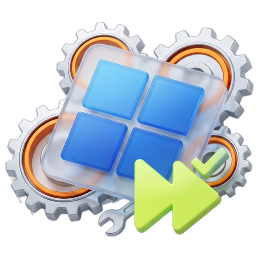
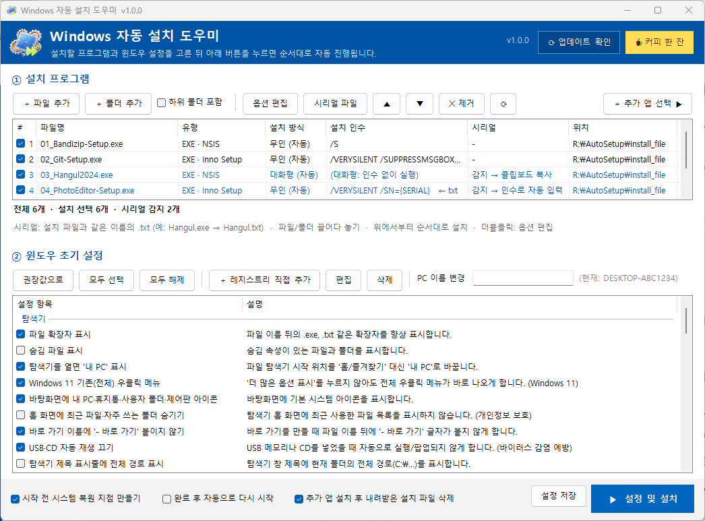
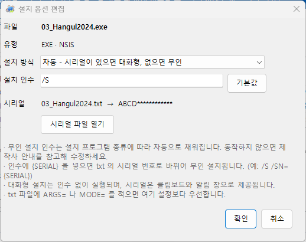
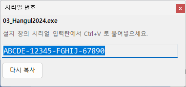
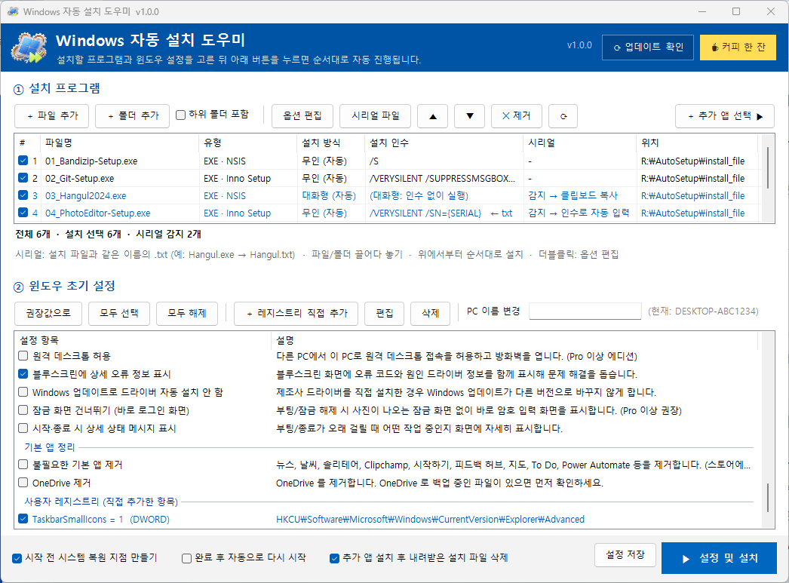
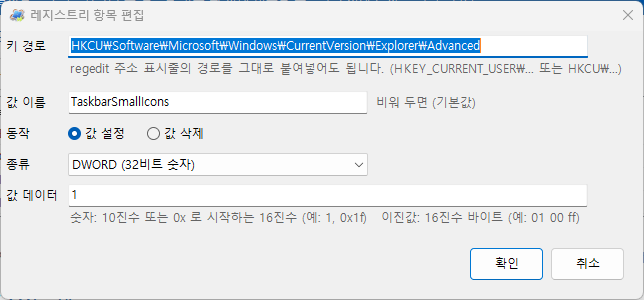
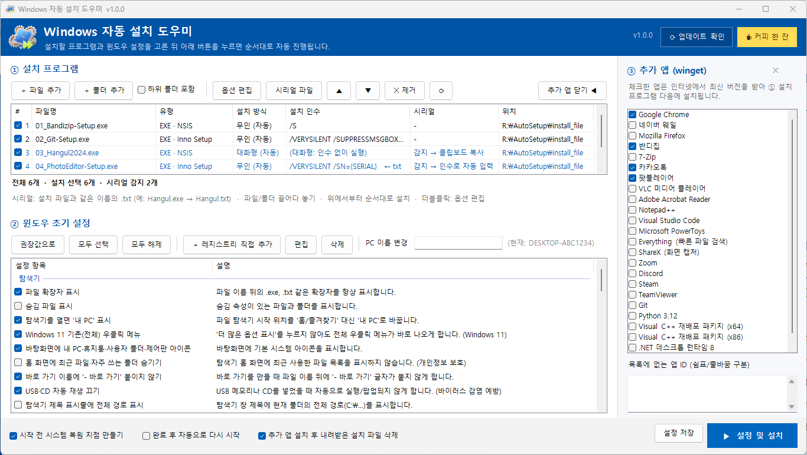
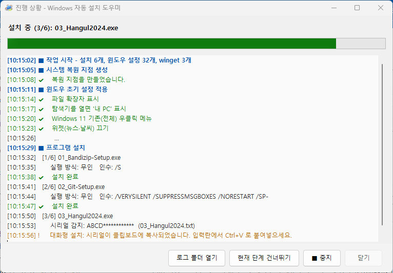
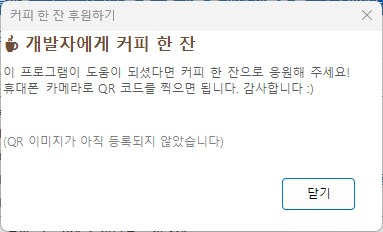

윈도우 새로 설치하고 1시간씩 걸리던 세팅, 버튼 한 번으로 끝내는 프로그램을 만들었습니다

윈도우를 새로 설치하면 할 일이 산더미입니다.
- 크롬, 카카오톡, 반디집, 한글… 설치 파일을 하나씩 실행하고 [다음] [다음] [동의] [설치]
- 시리얼 번호 찾아서 복사·붙여넣기
- 파일 확장자 보이게 하기, 작업 표시줄 정리, 광고·추천 앱 끄기, 절전 설정, NumLock…
회사 PC나 지인 PC까지 세팅하다 보면 매번 같은 일을 반복하게 됩니다.
그래서 설치 파일 + 시리얼 번호 + 윈도우 초기 설정을 한 번에 자동으로 처리하는 프로그램을 만들었습니다.
무료이고, 소스도 GitHub 에 공개되어 있습니다.
📥 다운로드: https://github.com/grasion/windows-auto-setup/releases/latest
(AutoSetup.exe하나만 받으면 됩니다. 설치 필요 없음)
한눈에 보기

한 화면에서 위에서부터 순서대로 고르면 됩니다.
- ① 설치 프로그램 – 설치할 파일 목록 (설치 순서대로)
- ② 윈도우 초기 설정 – 체크만 하면 적용되는 50가지 설정
- ③ 추가 앱 – 크롬·카카오톡처럼 인터넷에서 바로 받아 설치할 앱
그리고 맨 아래 [▶ 설정 및 설치] 버튼 한 번이면 끝입니다.
(설치할 프로그램 없이 윈도우 설정만 바꾸고 싶으면 버튼이 [▶ 설정 적용] 으로 바뀝니다)
주요 기능
1. 설치 파일을 넣어 두기만 하면 순서대로 자동 설치
AutoSetup.exe 옆의 install_file 폴더에 설치 파일을 넣어 두면 프로그램을 켤 때 자동으로 목록에 올라옵니다.
[＋ 파일 추가] / [＋ 폴더 추가] 버튼이나 끌어다 놓기로도 추가할 수 있고, ▲▼ 버튼으로 설치 순서를 바꿀 수 있습니다.
설치 파일 종류(NSIS, Inno Setup, MSI, InstallShield 등)를 자동으로 알아내서 창 없이 설치하는 옵션(무인 설치) 까지 알아서 채워 줍니다.
그래서 대부분의 프로그램은 [다음] 버튼을 누를 필요 없이 조용히 설치됩니다.

목록에서 항목을 더블클릭하면 설치 방식과 옵션을 직접 바꿀 수도 있습니다.
2. 시리얼 번호는 txt 파일 하나로 해결
시리얼이 필요한 프로그램은 설치 파일과 같은 이름의 txt 파일에 시리얼을 적어 두기만 하면 됩니다.
install_file\
Hangul2024.exe
Hangul2024.txt ← 여기에 시리얼 번호 한 줄설치가 시작되면 시리얼이 자동으로 클립보드에 복사되고, 화면 오른쪽 아래에 시리얼 알림 창이 뜹니다.
설치 화면의 시리얼 입력란에서 Ctrl + V 만 누르면 끝!

설치 프로그램이 명령줄로 시리얼을 받을 수 있는 경우에는 txt 에 이렇게 적으면 시리얼 입력까지 완전 자동으로 설치됩니다.
SERIAL=ABCDE-12345-FGHIJ-67890
ARGS=/S /SERIAL={SERIAL}3. 윈도우 초기 설정 50가지를 체크 한 번으로

윈도우 설치 후 다들 한 번씩은 찾아서 바꾸는 설정들을 모아 두었습니다. 기본으로 체크된 항목이 추천 설정이고, [권장값으로] 버튼으로 언제든 되돌릴 수 있습니다.
| 분류 | 예시 |
|---|---|
| 탐색기 | 파일 확장자 표시, 시작 위치 '내 PC', 윈도우 11 예전 우클릭 메뉴, '- 바로 가기' 글자 제거, USB 자동 재생 끄기 |
| 작업 표시줄 | 검색창 아이콘으로 줄이기, 위젯·채팅·Copilot 버튼 숨기기, 시계에 초 표시, 왼쪽 정렬 |
| 개인정보·광고 | 광고 ID 끄기, 시작 메뉴 추천 앱·광고 끄기, 진단 데이터 최소화, Recall 끄기 |
| 전원·성능 | 빠른 시작 끄기, 전원 연결 시 절전 안 함, 시작 프로그램 지연 없애기, 게임 바 녹화 끄기 |
| 시스템 | 부팅 시 NumLock 켜기, Shift 5번 고정 키 팝업 끄기, 업데이트 자동 재시작 막기, 블루스크린 상세 정보 |
| 기본 앱 정리 | 뉴스·날씨·솔리테어 같은 기본 앱 제거, OneDrive 제거 |
PC 이름 변경도 같은 화면에서 할 수 있습니다.
원하는 레지스트리 값도 직접 추가
목록에 없는 설정은 [＋ 레지스트리 직접 추가] 로 넣을 수 있습니다. regedit 주소창에 보이는 경로를 그대로 붙여넣으면 되고, 추가한 값은 저장되어 다음에도 그대로 적용됩니다.

4. 크롬·카카오톡 같은 앱은 인터넷에서 바로 설치

[＋ 추가 앱 선택 ▶] 을 누르면 오른쪽에 자주 쓰는 앱 목록이 열립니다. 체크만 하면 설치 파일을 따로 받을 필요 없이 항상 최신 버전을 내려받아 설치합니다.
(크롬, 웨일, 반디집, 7-Zip, 카카오톡, 팟플레이어, VLC, 아크로뱃 리더, VS Code, Visual C++ 재배포 패키지 등)
내려받은 설치 파일은 설치가 끝나면 자동으로 지워져서 디스크에 찌꺼기가 남지 않습니다.
(직접 넣어 둔 install_file 폴더의 설치 파일은 다른 PC에 또 쓸 수 있도록 지우지 않습니다)
5. 진행 상황 확인

버튼을 누르면 진행 상황 창이 뜨고 어떤 작업을 하고 있는지 실시간으로 보여 줍니다.
설치 화면이 멈춘 것 같을 때는 [현재 단계 건너뛰기] 로 다음 항목으로 넘어갈 수 있고, 모든 기록은 logs 폴더에 저장됩니다.
사용 방법
- GitHub 릴리스 페이지에서
AutoSetup.exe를 받습니다. - USB 같은 곳에 폴더를 하나 만들고
AutoSetup.exe를 넣습니다. - 같은 폴더에
install_file폴더를 만들고 설치 파일을 넣습니다. (시리얼이 필요하면 같은 이름의 txt 도 함께) AutoSetup.exe실행 → 관리자 권한 확인 창에서 [예]- 설치할 프로그램, 윈도우 설정, 추가 앱을 고르고 [▶ 설정 및 설치] 클릭!
설정은 settings.json 에 저장되므로, USB 를 들고 다니면서 다음 PC 에서는 실행하고 버튼만 누르면 됩니다.
USB\
AutoSetup\
AutoSetup.exe
settings.json ← 내가 고른 설정 (자동 저장)
install_file\
01_Bandizip-Setup.exe
02_Hangul2024.exe
02_Hangul2024.txt
...안심하고 쓰도록 넣어 둔 기능
- 시스템 복원 지점 자동 생성 – 작업 전에 복원 지점을 만들어 두기 때문에 문제가 생기면 이전 상태로 되돌릴 수 있습니다.
- 로그에 시리얼은 일부만 기록 –
ABCD****처럼 가려서 남깁니다. - 자동 업데이트 – 새 버전이 나오면 프로그램을 켤 때 알려 주고, [예] 한 번이면 알아서 교체 후 다시 시작합니다. 내려받은 파일은 SHA256 값으로 검증합니다.
- 오픈 소스 – 무엇을 바꾸는지 모든 코드가 GitHub 에 공개되어 있습니다.
자주 묻는 질문
Q. 따로 설치해야 하나요?
아니요. 윈도우 10/11 에 기본으로 들어 있는 .NET Framework 로 동작해서 AutoSetup.exe 하나만 있으면 됩니다.
Q. "Windows의 PC 보호" 파란 창이 떠요.
인터넷에서 받은 서명 없는 프로그램이라 처음 실행할 때 나올 수 있습니다. [추가 정보] → [실행] 을 누르면 됩니다.
Q. 어떤 프로그램은 설치 화면이 그대로 떠요.
무인 설치를 지원하지 않는 설치 파일입니다. 목록에서 더블클릭해 설치 방식을 "대화형" 으로 바꾸고 직접 진행하면 됩니다.
Q. 윈도우 설정은 누구 계정에 적용되나요?
프로그램을 실행한 사용자 계정에 적용됩니다. 설정할 계정으로 로그인해서 실행하세요.
☕ 커피 한 잔

프로그램 오른쪽 위의 [☕ 커피 한 잔] 버튼을 누르면 후원 QR 코드가 나옵니다.
도움이 되셨다면 커피 한 잔으로 응원해 주세요. 큰 힘이 됩니다!
버그 제보나 기능 제안은 GitHub Issues 에 남겨 주세요.
태그: #윈도우설치 #윈도우11 #윈도우초기설정 #프로그램자동설치 #무인설치 #PC세팅 #윈도우최적화 #무료프로그램 #오픈소스